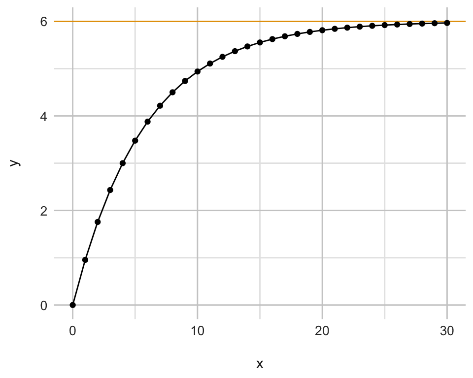

9 Grundlagen
Version vom February 24, 2023 um 12:00:46

In diesem Kapitel werden wir uns einmal mit den wichtigsten mathematischen Funktionen in der Anwendung beschäftigen. Wir schauen uns dabei die am meisten genutzen und am häufigsten vorkommenden Funktionen an. Daher fangen wir mit der linearen Funktion an, die uns dann in der Statistik sehr lange begleiten wird. Darüber hinaus schauen wir auch einmal auf die exponentielle Funktion, die in der Form uns später das ein oder andere Mal in der Analyse von echten Daten über den Weg läuft.
9.1 Genutzte R Pakete für das Kapitel
Wir wollen folgende R Pakete in diesem Kapitel nutzen. Zum einen brauchen wir das R Paket tidyverse um uns die Daten zu bauen, die wir dann mit dem R Paket ggplot visualisieren wollen. Das R Paket ggplot ist schon in dem R Paket tidyverse mit enthalten.
pacman::p_load(tidyverse, magrittr)
cbbPalette <- c("#000000", "#E69F00", "#56B4E9", "#009E73",
"#F0E442", "#0072B2", "#D55E00", "#CC79A7")9.2 Lineare Funktion
Wiederholen wir einmal die klassische lineare Funktion. Die lineare Funktion wird durch zwei Parameter bestimmt. Einmal die Steigung \(m\) sowie der y-Achsenabschnitt \(b\). Wenn also \(x\) um 1 ansteigt, dann ändert sich \(y\) um den Wert von \(m\). Die Gerade schneidet die \(y\)-Achse an dem \(y\)-Wert von \(b_0\).
\[ f(x) = mx + b_0 \]
In der Abbildung 9.1 sehen wir die lineare Funktion \(f(x) = 1.5 \cdot x + 5\) einmal als Gerade dargestellt. Hier wird nochmal schnell klar, was die Parameter der Geradengleichung aussagen. Die Gerade passiert die \(y\)-Achse bei einem Wert von 5. Wenn wir von \(x=0\) zu \(x=5\) gehen, dann steigt die Gerade von \(y = 5\) auf \(y = 12.5\). Damit ist dann die Steigung \(m = \tfrac{12.5-5}{5} = 1.5\). Eigentlich realtiv einfach und straight forward.
tibble(x = 0:10,
y = 1.5 * x + 5) %>%
ggplot(aes(x, y)) +
theme_radar() +
ylim(0, NA) +
geom_path() +
geom_point() 9.3 Exponentialfunktion
Die Exponentialfunktion ist eine sehr wichtige biologische Funktion. Wir können mit der Exponentialfunktion zum Beispiel Wachstum oder aber Zerfall. Deshalb hier einmal die grundlegende Formel für die Exponentialfunktion.
\[ f(x) = b_0 + a \cdot b_1^{c\cdot x + d} \] Wir haben hier wieder den \(y\)-Achsenabschnitt \(b_0\). Dann einen Multiplikator \(a\) für die eigentliche Exponentialfunktion.
\[ f(x) = 2^x \]
exp_tbl <- tibble(x = 0:10,
y = 2^x)
exp_tbl %>% print(n = Inf)# A tibble: 11 × 2
x y
<int> <dbl>
1 0 1
2 1 2
3 2 4
4 3 8
5 4 16
6 5 32
7 6 64
8 7 128
9 8 256
10 9 512
11 10 1024\(\log\) als Umkehrfunktion
\[ 8 = 2^x \] \[ \log_2(8) = 3 \]
\[ \log_a(b) = \cfrac{\log(b)}{\log(a)} \] \[ \log_{12}(50) = \cfrac{\log(50)}{\log(12)} = \cfrac{3.91}{2.48} = 1.58 \]
exp_tbl %>%
ggplot(aes(x, y)) +
theme_radar() +
geom_path() +
geom_point() 
Die Summe über alle \(y\)-Werte Auch als Formel mit
\[ \sum_{n=0}^N r^n = \cfrac{r^{N + 1} -1}{r - 1} \]
(2^(5+1)-1)/(2-1)[1] 63exp_tbl %<>%
mutate(cumsum_y = (2^(x+1)-1)/(2-1))
exp_tbl# A tibble: 11 × 3
x y cumsum_y
<int> <dbl> <dbl>
1 0 1 1
2 1 2 3
3 2 4 7
4 3 8 15
5 4 16 31
6 5 32 63
7 6 64 127
8 7 128 255
9 8 256 511
10 9 512 1023
11 10 1024 2047exp_tbl %>%
ggplot(aes(x, cumsum_y)) +
theme_radar() +
geom_path() +
geom_point() 
\[ \sum_{n=0}^N a \cdot r^n = a\left(\cfrac{r^{N + 1} -1}{r - 1}\right) \]
9.3.1 Halbwertszeit
\[ N(t) = N_0 \cdot \cfrac{1}{2}^{\cfrac{t}{t_{1/2}}} \]
tibble(t = 0:30,
y = 100 * 1/2^(t/3.5)) %>%
ggplot(aes(t, y)) +
theme_radar() +
geom_path() +
geom_point() 
9.3.2 Sättigungsfunktion
Jedes biologisches Wachstum folgt einer Sättigungsfunktion auch wenn wir als erstes annehmen würden, es handelt sich um ein unbegrenztes exponentielles Wachstum. Hier wollen wir nicht in die Diskussion verfallen, ob es auch ein unbegrenztes ökonomisches Wachstum gibt oder nicht. Das Schneeballsystem sei hier nur warnend erwähnt.
Auf der Wikipedia Seite finden sich Beispiele für das exponentielle Wachstum.
\[ f(x) = b_0 - a \cdot b_1^{-c \cdot x + d} \] Im Folgenden sehen wir einmal eine Gleichung einer Sättigungsfunktion als Beispiel.
\[ f(x) = 6 - 1.5 \cdot 2^{-\frac{1}{4}\cdot x + 2} \]
In der Abbildung 9.5
tibble(x = 0:30,
y = 6 - 1.5 * 2^(-1/4*x + 2)) %>%
ggplot(aes(x, y)) +
theme_radar() +
geom_hline(yintercept = 6, color = cbbPalette[2]) +
geom_path() +
geom_point()
9.4 Quellen
https://www.statforbiology.com/nonlinearregression/usefulequations#michaelis-menten_equation
https://en.wikipedia.org/wiki/Cubic_function
https://en.wikipedia.org/wiki/Polynomial
https://de.wikipedia.org/wiki/Exponentielles_Wachstum
https://www.rhetos.de/html/lex/exponentielle_saettigungsfunktion.htm